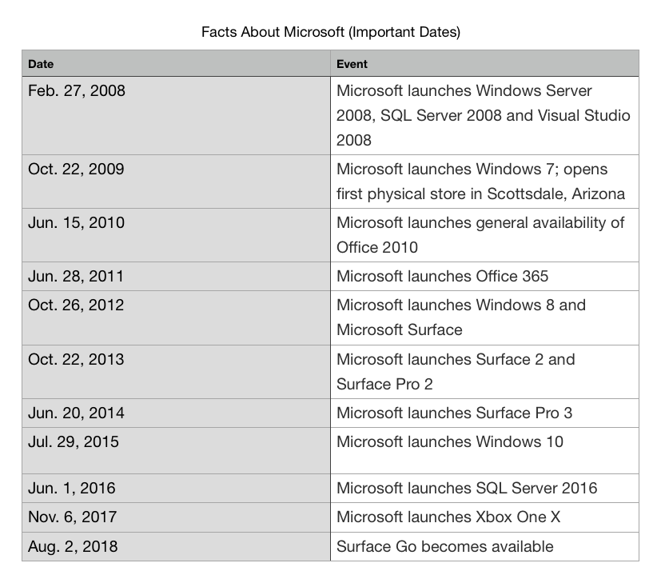

The datasets used for this d3 visualization are important dates from Microsoft official website Facts About Microsoft page, and Google, Amazon and more employee reviews (web scraped over 67k employee reviews for Google, Amazon, Apple, and more) from Kaggle. After I gather those data, I filter them. Select the 10 most popular products Microsoft launches from 2008 to 2018 and made it into a table. Also, I abstract the employee reviews of Microsoft from the overall employee review dataset, then calculate the average rating of the overall rating, work balance, and career opportunity. Merge these two tables into one table. Each rating information is corresponding to each of the important date of Microsoft.
This line chart is a D3 visualization which enable users to view and to compare employee reviews from different aspects based on Microsoft new product launch date. You can view this line chart either individually or with another table below. The two charts using the same date. By comparing them, you can explore how Microsoft launch a product affect employee in different aspects. The red line represents the overall rating; the blue line represents the work-balance rating; the green line represents the career-opportunity rating. (To get the tooltips about detailed data, hover over the line chart)
The table below shows the most popular products Microsoft launched in each year. Each date is corresponding to the employee review in the above line chart.
From the line chart, there is a huge drop in employee reviews between 2008 and 2009. The year of 2008 has the highest employee reviews, and 2009 has the lowest employee reviews over this ten year's peroiod. After 2005, all three categories of rating start an upward tendency.
The employee review might indicates that Windows Server 2008, SQL Server 2008 and Visual Studio 2008 are successful and has a very good impact to Microsoft employees since in 2008, the rating is almost 5. In 2012, the job opportunity rating is higher than other two categories of rating which might imply that the launch of Windows 8 and Surface lead more job opportunities. In 2013, the work-balance is the lowest which might imply that employees spent more time during Surface 2 and Surface Pro 2 launches perid.